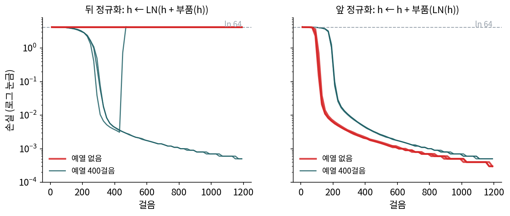

트랜스포머 블록: 어텐션과 MLP 를 층 정규화와 잔차로 엮어 쌓는다
여러 머리 어텐션으로 토큰들은 서로를 읽었다. 그런데 토큰이 받아 가는 것은 값들을 비중대로 섞은 것이라, 읽은 것을 토큰 안에서 곱씹어 새 특징으로 바꾸는 일은 하지 않는다. 그 일은 토큰마다 따로 거는 MLP 가 맡는다. 그리고 실제 모델은 이 둘을 한 벌로 묶어 수십 번 쌓는다. Krea 2 가 글 인코더로 쓰는 Qwen3-VL-4B 의 언어 쪽은 36벌이다. 입력을 그대로 넘기고 고친 만큼만 더하는 잔차 연결은 깊이 쌓은 합성곱 신경망에서 이미 썼다. 그것만으로 수십 벌을 쌓을 수 있을까? 합성곱 블록에는 그룹 정규화가 있었는데, 토큰 줄에는 무엇을 어디에 둬야 할까?
역사: 정규화의 자리를 옮기기까지
바스와니와 동료들의 원래 트랜스포머는 부품마다 출력을 입력에 더한 뒤 정규화했다. 정규화는 토큰 하나의 수들을 평균 0, 분산 1로 맞추는 층 정규화(바(Jimmy Ba), 키로스(Jamie Kiros), 힌턴(Geoffrey Hinton), 2016)를 썼다. 문장마다 길이가 다른 토큰 줄에서도 토큰 하나만 보고 계산할 수 있어서다. 그런데 이 꼴은 학습을 시작할 때 학습률을 아주 작게 두었다가 천천히 키우는 예열(warm-up)이 있어야 학습이 됐다. 2019년 OpenAI 의 GPT-2 는 층 정규화를 「각 부품의 입력으로 옮기고」 마지막 블록 뒤에 하나를 더 두었다. 2020년 숑(Ruibin Xiong)과 동료들은 그 까닭을 따져, 원래 꼴에서는 학습을 시작할 때 출력 가까운 층의 기울기가 커서 큰 학습률이 학습을 흔든다는 것을 보이고, 정규화를 부품 안쪽 입력으로 옮기면 기울기가 처음부터 고르며 예열 없이도 학습된다고 보고했다.
24벌을 쌓아 예열 없이 학습하면
직접 확인해 보자. 블록 24벌, 폭 128, 머리 4개인 작은 트랜스포머에 「베끼기」 과제를 시켰다. 낱말 64가지 가운데 무작위로 32개를 늘어놓고, 바로 이어서 같은 32개를 다시 쓰게 한다. 아무것도 못 배우면 손실은 ln 64 = 4.159에 머문다. 학습률 1e-3인 Adam 으로 1,200걸음, 시드 셋으로 돌렸다.
두 꼴은 정규화의 자리 하나만 다르다. 뒤 정규화는 부품의 출력을 줄기에 더한 다음 줄기 전체를 정규화하고(h ← LN(h + 부품(h))), 앞 정규화는 부품에 들어가는 입력만 정규화하고 줄기에는 손대지 않는다(h ← h + 부품(LN(h))).

네 경우가 어떻게 갈리는지는 아래 문제에서 그림을 읽으며 따져 본다. 블록 하나를 앞 정규화 꼴로 적으면 이렇다.
토큰끼리 읽는 여러 머리 어텐션과 토큰마다 곱씹는 MLP 를, 둘 다 「층 정규화 → 부품 → 잔차 더하기」로 감싼 한 벌을 트랜스포머 블록 (어텐션 + MLP 한 벌 / transformer block)이라 하고, 이 블록을 쌓은 신경망을 트랜스포머라 한다. 블록을 지날 때마다 나오는 토큰 벡터 줄을 은닉 상태라 부르고, 그 층 번호를 ℓ로 적는다. 앞 정규화에서는 잔차 줄기 h가 정규화를 거치지 않고 처음부터 끝까지 이어진다. 블록은 줄기에서 정규화한 복사본을 읽고, 고칠 몫만 줄기에 더한다.
ML에서: 이름만 바뀐 같은 블록
이 블록은 거의 모든 최근 모델에 그대로 있다. Qwen3-VL-4B 언어 쪽은 블록 36벌, 폭 2560, MLP 가운데 폭 9728이고, 층 정규화에서 평균 빼기를 생략하고 크기만 맞추는 더 단순한 RMS 정규화를 쓴다(로컬 설정 파일 config.json). Stable Diffusion 1.x 의 어텐션 블록 안에도 같은 앞 정규화 블록이 들어 있다(ComfyUI BasicTransformerBlock: norm1 → 셀프 어텐션 → 더하기, norm3 → MLP → 더하기). 다만 그 사이에 부품이 하나 더 끼어 있는데, 그것은 다음 절의 몫이다.
문제 9. 학생마다 표준화한 성적
학생 A의 국어·영어·수학 점수는 (90, 80, 70), B는 (60, 50, 40), C는 (90, 50, 70)이다. (가) 학생마다 세 과목 점수에서 평균을 빼고 표준편차로 나누면 각각 어떻게 되는가? (나) 과목마다 두 학생 A, B의 점수를 표준화하면? (다) 학생마다 표준화한 표에서 잃은 정보와 남은 정보는 무엇인가?

(가)는 A가 (1.225, 0, −1.225), B도 (1.225, 0, −1.225)예요. 어, 똑같네요. C는 (1.225, −1.225, 0)이고요.

(나)는 과목마다 A가 +1, B가 −1이야. 이번엔 과목끼리는 다 같아지고 학생끼리만 갈려.

(가)의 표만 받은 사람이 「A가 B보다 공부를 잘했다」를 알 수 있어요?

둘이 똑같으니 모르죠. 30점 차이가 통째로 사라졌어요.

잃은 건 한 학생의 점수 전체의 높이와 퍼진 정도, 남은 건 과목끼리의 모양이야. A와 B는 「국어 > 영어 > 수학」 모양이 같고, C는 모양이 달라서 갈려. 층 정규화가 토큰마다 하는 게 이거네. 토큰 하나의 수들의 평균과 크기는 지우고 모양만 남겨.

그래서 앞 정규화 블록은 정규화한 것을 부품에만 보내고, 줄기에는 정규화 전의 값을 그대로 둬요. 지운 높이와 크기도 줄기에는 남아 있어요.

학생마다 자기 평균으로 성적표를 고치면 「어느 과목이 강한가」 상담은 되는데 장학금은 못 정하는 거랑 같네요. 원래 성적표는 따로 보관해야죠.
문제 10. 잔차 줄기는 얼마나 자라는가
앞 정규화 블록에서 줄기는 h(ℓ) = h(ℓ−1) + (고칠 몫)으로 자란다. 길이 1인 출발 벡터에, 블록마다 길이 1이고 방향이 무작위인 벡터(256차원)를 더한다고 하자. (가) 블록 1, 4, 16, 36개를 지난 뒤 줄기의 길이는 대략 얼마인가? (나) 블록 안 부품은 정규화한 입력을 받는다. 줄기가 길어지면 블록 하나가 줄기를 바꾸는 비율은 어떻게 되는가? (다) 「고칠 몫이 무작위 방향」이라는 가정이 깨지면?
2000번씩 돌려 보니까 1.414, 2.235, 4.120, 6.067이에요.
√2, √5, √17, √37이랑 거의 같아. 서로 상관없는 방향을 더하면 길이의 제곱이 더해지니까, 블록 L개 뒤에는 √(L + 1)이야.
(나)로 가 봐요. 36블록째에서 길이 1짜리 몫을 더하면 줄기가 얼마나 바뀌죠?
줄기가 6쯤이니까 6분의 1쯤이에요. 첫 블록은 줄기를 통째로 바꿀 만큼 더했는데, 뒤로 갈수록 블록 하나의 목소리가 작아져요. 부품은 정규화된 입력을 받아서 출력 크기가 줄기 크기를 따라가지 않으니까요.

그럼 뒤쪽 블록은 일을 안 하는 거예요?
(다)를 생각해 보면 답이 나와요. 학습이 끝난 모델의 몫도 무작위 방향일까요?

아니겠죠. 학습하면 뒤쪽 블록은 필요하면 몫을 크게 내도록 배울 수 있고, 여러 블록이 같은 방향으로 더하면 길이는 L에 비례해서 자라요. 무작위 가정은 학습을 시작할 때의 모습이에요.
그래요. 학습을 마친 Qwen3-VL-4B 언어 쪽에서 프롬프트 토큰 평균 벡터의 크기를 재면 1층 5.9, 20층 59.8, 35층 533.6으로, 무작위 가정의 √(L + 1)보다 훨씬 빨리 자라요. 처음에는 블록마다 고르게 작은 몫을 더하니 깊이 쌓아도 출발이 순하고, 학습이 그 크기를 정해 가는 거예요.

공동 문서에 36명이 한 줄씩 덧붙이면 뒤에 쓴 사람 한 줄은 문서 전체에서 티가 덜 나는 거네요. 대신 다들 같은 얘기를 쓰면 문서가 그쪽으로 확 기울고요.
문제 11. 정규화의 자리와 예열
위 그림의 학습 곡선을 읽어라. (가) 예열 없이 학습한 뒤 정규화 모델의 손실은 1,200걸음 동안 어디에 머물렀는가? 그 값은 무엇을 뜻하는가? (나) 예열을 넣은 뒤 정규화와, 예열 없이 학습한 앞 정규화를 견주라. (다) 이 실험으로 「뒤 정규화는 쓰면 안 된다」고 말할 수 있는가?
(가)는 세 시드 모두 4.16 근처에서 1,200걸음 내내 안 내려와요. 끝에 4.1617, 4.1616, 4.1615예요.
4.16이 어떤 손실이죠? 낱말이 64가지였어요.

ln 64 = 4.159요. 64가지 가운데 아무거나 고르는 셈이니까, 베끼기를 하나도 못 배운 거예요. 학습률이 1e-3이면 큰 편도 아닌데요.
(나)는 예열을 넣은 뒤 정규화가 100걸음에 4.0, 200걸음에 2.84, 300걸음에 0.01에서 0.08까지 내려와. 예열 없는 앞 정규화는 100걸음에 벌써 0.16에서 0.71이고 200걸음에 세 시드 다 0.007 아래야. 끝에는 0.0003.
예열을 넣은 뒤 정규화의 세 선을 끝까지 따라가 봐요.

어, 시드 하나는 300걸음에 0.0104까지 내려갔다가 440걸음 무렵 0.72, 460걸음에 4.32로 튀어 오르더니 끝까지 4.16 근처에 있어. 예열이 끝나고 학습률이 1e-3에 닿은 뒤에 무너진 거야. 예열이 있어도 뒤 정규화는 아슬아슬했던 거네.
그럼 (다)는요?
뒤 정규화는 여섯 번 가운데 네 번 실패했으니 쓰면 안 되는 거죠.
이건 과제 하나, 크기 하나, 학습률 하나에 시드 셋이야. 원래 트랜스포머도 뒤 정규화에 예열을 붙여 잘 학습했잖아. 우리가 확인한 건 「블록 24벌에 이 학습률이면 뒤 정규화는 예열 없이 출발하지 못하고, 예열이 있어도 흔들릴 수 있다. 앞 정규화는 예열 없이도 출발한다」까지야. 왜 그런지, 숑과 동료들이 말한 출력 쪽 기울기도 우리는 재지 않았어.
그래요. 정규화를 어디에 두느냐는 「학습이 출발할 수 있느냐」를 바꾸는 선택이고, 그 차이는 블록을 깊게 쌓을수록 커져요. 그래서 최근 모델은 거의 모두 앞 정규화를 써요.
첫날부터 전력으로 달리면 근육이 놀라니까 준비 운동을 하는 건데, 애초에 자세가 바른 사람은 준비 운동 없이도 덜 다치는 거네요.